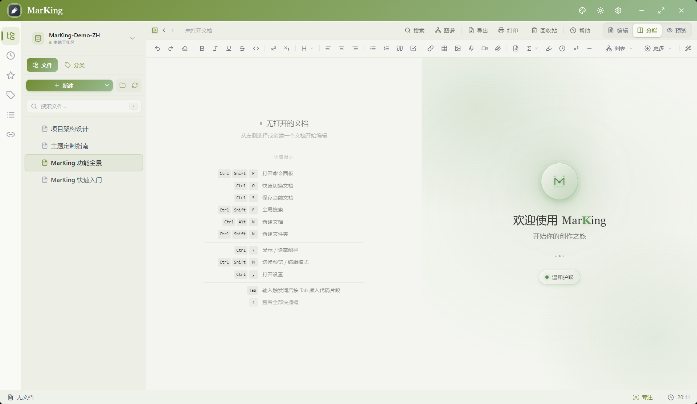
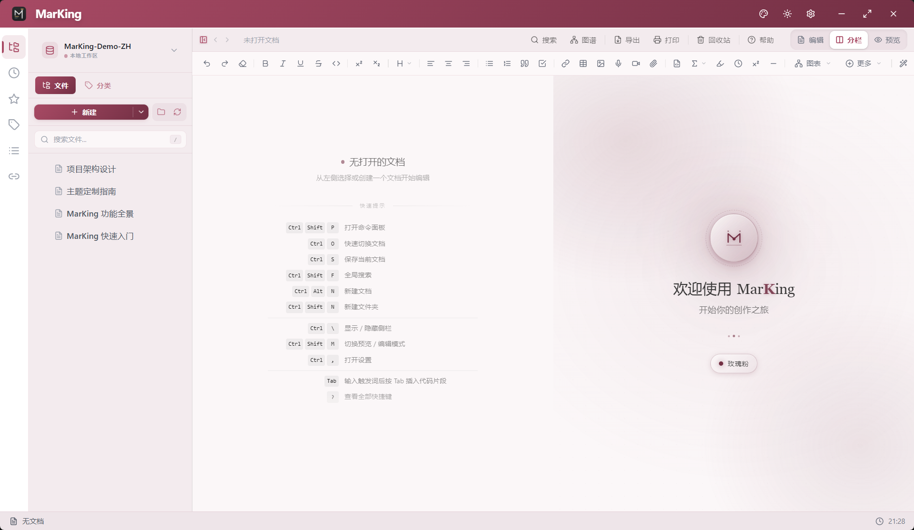
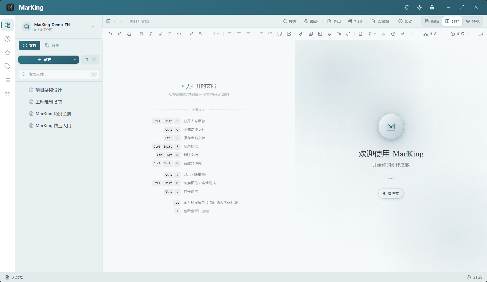
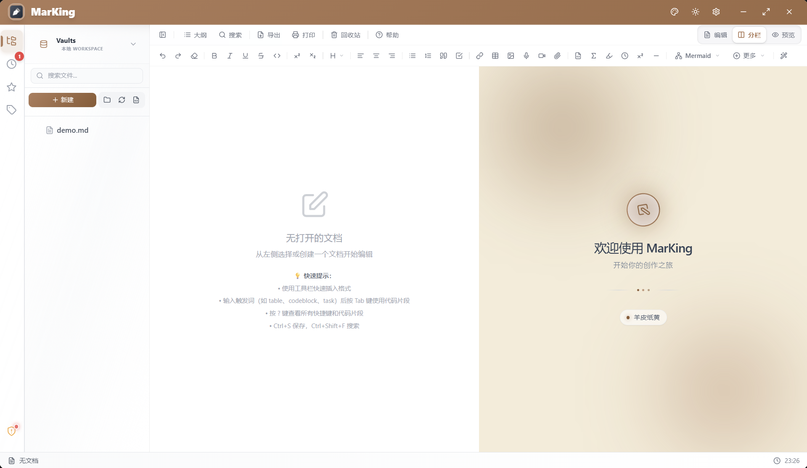
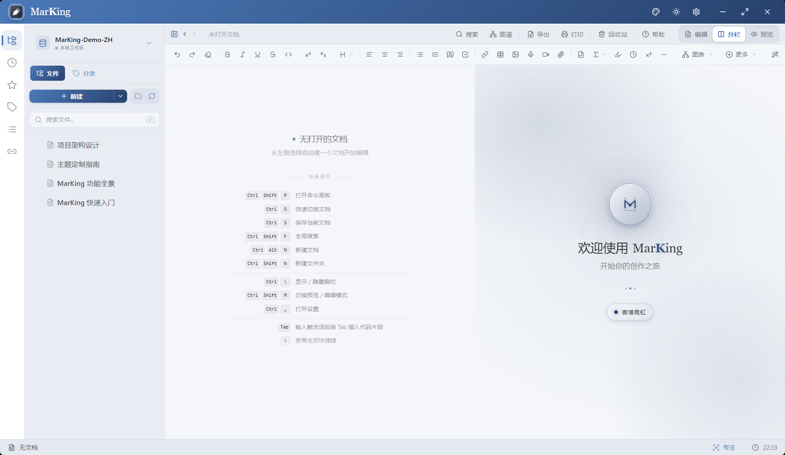

v1.3.2 — 剪贴板快捷捕获 · 附件管理器升级 · 全栈安全加固
MarKing
专业 Markdown 编辑器
本地优先 · 零追踪 · 跨平台
为严肃写作者打造的现代化文档创作工具

本地优先 · 零追踪 · 跨平台
为严肃写作者打造的现代化文档创作工具
强大功能 × 极致体验 × 安全可靠，让文档创作更高效、更专业
精致毛玻璃与物理级微交互的极简工具栏，70+ 智能代码片段与上下文补全，十万字长文流畅滚动，尽享行云流水的写作快感。
专为纯粹阅读和轻量修改打造。默认应用直接秒开，摒弃一切繁杂界面，以极低资源占用瞬间呈现你的文档。
MathLive 驱动的可视化公式编辑器，虚拟键盘让复杂数学公式输入直观高效，实时预览所见即所得。
内嵌手绘风格白板，自由绘制流程图、架构图、思维导图，让文档表达更加生动直观。
像 Excel 一样拖拽编辑表格。全新引入现代化的浮动快捷工具栏，交互更加聚焦优雅。搭配 Mermaid 助手，无缝编排复杂图表代码。
自动解析双向链接与文档引用关系，以交互式力导向图可视化你的知识网络。
Ctrl+Shift+P 一键唤出，模糊搜索快速触达任意功能，键盘流用户的效率利器。
一键隐藏所有面板与干扰元素，打字机滚动让视线始终聚焦当前段落，沉浸创作。
点击分类标签，浏览 MarKing 的核心能力

双栏实时预览，100+ 语法高亮，十万字长文流畅滚动

70+ 代码片段，上下文感知补全，一键格式化

作为默认应用秒开文件，极低资源占用，专注阅读

Ctrl+Shift+P 一键唤出，模糊搜索快速触达任意功能

一键隐藏干扰，打字机滚动聚焦当前段落，沉浸创作

MathLive 驱动，虚拟键盘直觉输入，实时预览所见即所得

嵌入式手绘风格白板，流程图、架构图信手拈来

像 Excel 一样拖拽编辑，浮动工具栏聚焦优雅

辅助编写流程图、时序图、甘特图等多种图表

全新模板系统，自定义样式与实时预览，一键生成专业文档

DOCX / PDF / HTML 多格式导出，满足学术与商业标准

独立管理不同项目，数据隔离更安全

全新升级的备份系统，灵活备份范围，数据更安全可控

独立代码块高亮选项，多套发烧友级经典配色

自动解析双向链接，交互式力导向图可视化知识网络
告别千篇一律的界面，每一套主题都经过像素级调校。
下图仅为精选示例，下载 MarKing 解锁完整主题库，结合毛玻璃材质与光影特效，体验真正的沉浸式创作。





支持随系统自动切换深色/浅色模式，白天夜晚均有完美表现。
选择适合你的平台，开始高效的文档创作之旅
v1.3.2 | Windows 10+
v1.3.2 | macOS 10.15+
v1.3.2 | 主流发行版
MarKing 致力于为您提供极致的创作体验，
如果您觉得它为您的工作带来了巨大价值，欢迎请作者喝杯咖啡，支持后续功能的开发与迭代。
所有赞助将直接用于项目的长期发展维护 • 感谢每一位支持者